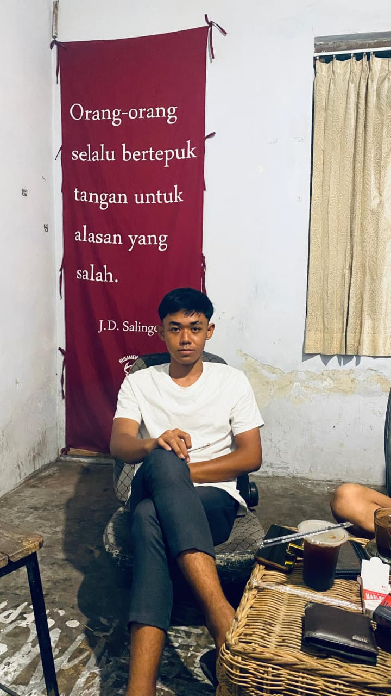

.jpeg "lipky") gatau kenapa suka aja sama poto ini
gatau kenapa suka aja sama poto iniHappy Birthday Lipky🥳✨Ciee ada yang udah 18 nih, gimana selama 18 tahun ini km survive hidup?
pasti bingung yah,
apalagi kamu ga ada yang ngasi tutorial wkwk but it's okay
karena kedepannya kamu pasti lebih banyak menghadapi huru hara kehidupan.
Semoga di ulang tahun ke 18 ini kamu diberikan kesehatan dan panjang umur yaaa, biar kamu bisa ngejar apa
yang kamu mimpikan di masa depan.
Semoga setiap langkah dan usahamu di permudah ya,
semoga apa yang kamu mimpikan dapat tercapai (tentunya dengan kerja keras yaa!!!)
sejujurnya aku bingung mau bilang apa lagi,
oiyaa bukan berarti kalo aku bilang kerja keras kamu langsung ga mau istirahat lo yaa
jangan terlalu maksain juga,
kalo lagi ada masalah kamu boleh cerita ke aku, meskipun aku
ga terlalu jago buat menghibur orang tapi aku siap jadi pendengar kok hehe
karena ada manfaatnya diantara lain✨ :
1. bisa mengurangi stress
kok bisa? iyala karena aku kan udah cantik lucu imut baik siapa coba yang ga mau ditemenin sama cwe se perfect gwe (pd dikit)
2. karena bisa mengurangi beban. emang iya bang? iya karena aku gacuma mengurangi beban
tapi juga nambahi beban km hehe (canda yah)
3. klo km cerita ke aku sebisa mungkin aku dengerin dengan baik, trs
aku bakal kasi saran klo bisa si, tp gpp penting kan cerita hms
4. nanti kalo aku banyak duit trs km lgi ad masalah ntr ku kasi es krim 2000 heehe (mayan kan)
udah si itu aja hhe (┬┬﹏┬┬)
tetap menjadi orang yang baik yaaa, jangan cape" pokoklnya
jadi orang baik, terus jadi diri sendiri, jangan ikut" orng lain.
jangan terlalu kasar and toxic jg apalagi marah". trs kalau bisa
kurangin ngerokoknya yahh, meskipun km udh mulai ngurangi si
tp
klo bisa yaa lebih baik lgi. aku ga bosen" buat ngingetin km buat
berhenti ngerokok.
and semangat belajarnya,
semangat buat ngejar impian kamu.
kalau udah jadi orang sukses jangan lupain akuuu:D
gatau kenapa suka aja sama poto ini
.jpeg "lipky") ini okela
ini okela
.jpeg "lipky") ini kurang aku si
ini kurang aku si
 ini bagus senyumnya 80/100
.jpeg "lipky") ini lucu bngt si kaya bocah ilang wkwk
ini lucu bngt si kaya bocah ilang wkwk